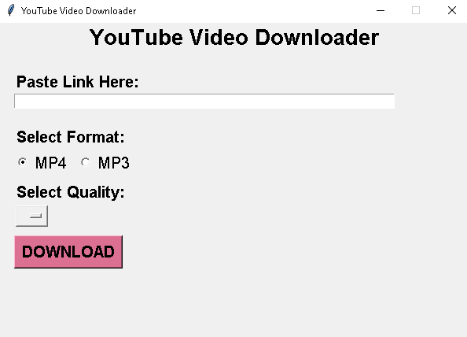
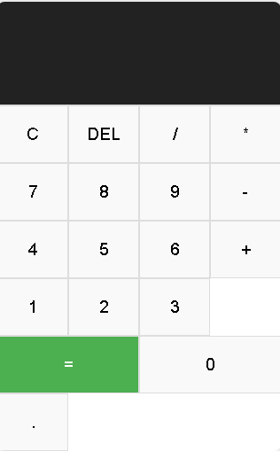

YouTube Video Downloader

This project
leverages the yt-dlp library to fetch and download videos in
specific resolutions with audio, providing users with an
easy
way to download their preferred video quality.
Key Features:
Online MockTest Application

The Online MockTest Application is a Python-based desktop application developed using Tkinter GUI library. It allows users to simulate mock exams by fetching questions from online sources based on selected topics and difficulty levels. The application provides real-time scoring and performance analysis, making it an essential tool for exam preparation.
Calculator

The Calculator project is a web-based tool created using HTML, CSS, and JavaScript. It features a responsive design and supports basic arithmetic operations and memory capabilities. The calculator's intuitive interface ensures seamless usability for performing both simple calculations and complex mathematical operations.